FysioFlex-2
Globale opbouw
Iedere ingangsmodule bestaat uit een 4-kanaals universele versterker en een 24-bit AD-converter. De ingangsmodulen aan de medisch-veilige zijde en aan de niet-medisch-veilige zijde zijn volkomen identiek.
De besturingsmodule verzorgt de besturing van de ingangsmodulen, de communicatie met de PC en de voeding. Tevens is op de besturingsmodule de medisch veilige scheiding aangebracht.
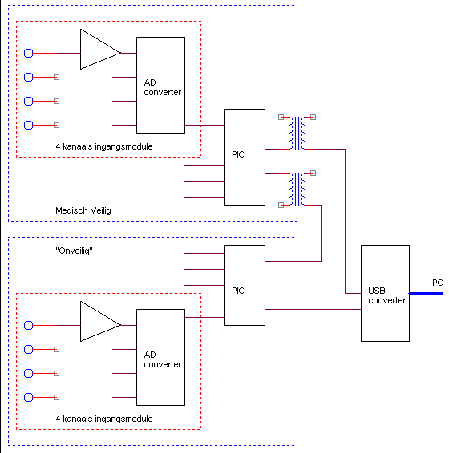
Ingangsmodule
Uitgangspunt van de ingangsmodule is de 4-kanaals differentiële 24 bits AD-converter. Hiervoor is het type ADS1211 van TI geselecteerd. Dit is een van de weinige die én 24 bits lineair heeft, én 4 kanalen heeft, én voldoende snel is, én een replacement (ADS 1213 van TI) heeft.
Deze AD-converter heeft een maximale througput van 16 kHz bij gebruik van 1 kanaal. Bij gebruik van meerdere kanalen reduceert the througput met een factor 3 of 4, afhankelijk van de gekozen besturing. De hier gekozen besturing (gebruik van CS) geeft een reductie van 4, zodat de maximale sample frekwentie 1 kHz (exact 975 Hz) bedraagt.
De overige functionele elementen van de ingangsmodulen worden gevormd door, een brugspanning-uitgang en een sensor-ID ingang.
De ingangsversterker is een differentiële ingangstrap met een differentiële versterking in het doorlaatgebied van 20. Omdat de AD-converter een differentiële ingang heeft, worden de differentële uitgangen van de voorversterker rechtstreeks op de AD-converter aangesloten.
Patient-lekstroom, bij een enkelvoudige fout
In principe zijn alle galvanische verbindingen met de patient via relatief hoogohmige weerstanden gerealiseerd. De waarde van deze weerstanden is gebaseerd op een maximale onbedoelde lekstroom van 10 uA bij een enkelvoudige fout. Bij een voedingsspanning van 5V wordt dan de volgende waarde verkregen (factor 2, omdat de lekstroom altijd door 2 (hoogohmige) galvanische verbindingen loopt)
R = (5 V / 10uA) / 2 = 250 kOhm
Daarnaast wordt via een crowbar (zener+zekering) gezorgd dat de voedingsspanning in het circuit nooit meer dan 5V6 kan bedragen.
Defibrillator beveiliging is gerealiseerd middels enerzijds een dubbele gasontladingsbuis (ontsteekspanning 80V ??) en serieweerstanden en anderzijds door wederom serieweerstanden en clampdioden naar aarde en voedingsspanning. Al deze serieweerstanden tellen ook mee voor het maximaliseren van de patient-lekstroom bij een enkelvoudige interne fout.
Simulatie via Belkin RS232-USB converter
- JALss=RS232, Midac=USB, andersom werkt niet goed.
Master/slave
na het zenden van een byte moet uiteraard gewacht worden totdat de data verzonden is plus nog een beetje (stopbit),
voordat de slave enabled wordt,
hetzelfde geldt in omgekeerde volgorde,
de master mag pas weer gaan zenden ongeveer 10 usec nadat de slave disabled is, immers de slave kon nog bezig zijn.
ToDo
FTDI USB converter
Bij 20 MHz bedraagt de maximal baudrate voor de PIC 1250kBaud.
De FDTI chip 232AM kan 3,000,000 / 2.5 = 1200 kBaud aan.
FDTI 232BM heeft deeltal van 2.375, hiermee wordt 1250 kBaud op 1% nauwkeurig benaderd.
De afwijking is aan de hoge kant, ongeveer 4%.
In de praktijk blijkt echter zowel de veilige als de onveilige kant het goed te doen.
|
gewijzigde versie voor winXP, de baudrate voor 57600 is aangepast. Door nu MIDAC in te stellen op 57600, wordt in feite een baudrate van 1250 of 1200 kBaud gehaald. Deze wijziging moet eventueel ook voor andere operating systemen worden uitgehaald (voor de installatie!!) |
[FtdiPort232.NT.HW.AddReg];HKR,,"UpperFilters",0x00010000,"serenum"HKR,,"ConfigData",1,01,00,3F,3F,10,27,88,13,C4,09,E2,04,71,02,38,41,9c,80,4E,C0, 02,40, 1A,00,0D,00,06,40,03,80,00,00,d0,80 |
|
Orginele versie |
[FtdiPort232.NT.HW.AddReg];HKR,,"UpperFilters",0x00010000,"serenum"HKR,,"ConfigData",1,01,00,3F,3F,10,27,88,13,C4,09,E2,04,71,02,38,41,9c,80,4E,C0, 34,00, 1A,00,0D,00,06,40,03,80,00,00,d0,80 |
TX van PC naar veilige PIC
Het blijkt dat de USB converter onvoldoende stroom kan leveren (zowel negatief als positief ), bij een voldoende grote (TTL) spannings zwaai.
Derhalve moet de optocoupler gevoed worden uit een zwaardere trap (liefst met CMOS zwaai). Aangezien we nog een 74ACT74 poort over hebben kunnen we deze gebruiken als driver. De te leveren stroom is voldoende. Omdat nu de USB module niet meer belast wordt, zal de zwaai op de TX pin voldoende blijven door de onveilige PIC goed te worden ontvangen.
Bij het gebruik van een 7474 als driver moeten we oppassen omdat niet alle fabrikanten dezelfde interne opbouw hebben voor wat betreft set/preset condities !!! Na een aantal fabrikanten nagelopen te hebben, (Philips, TI, ST), blijkt dat ze in ieder geval als gemeenschappelijk de volgende "inverter" ondersteunen:
set = 0
clear = input
-Q = inverted output
data and clock zijn niet relevant
Q doet niets of verschillend
Omdat de driver nu inverteert, moet de diode in de opto-coupler anders aangesloten worden.
Belangrijk hierbij is dat de weerstand tussen de driver en de opto-coupler zit en niet tussen aarde en optocoupler (i.v.m. de CMRR !!).
|
aardvlak doet wonderen LM324 lijkt het beste, ondanlks de beperkte ingangasimpedantie van 50 MOhm (TLC27 10^12) Blijkbaar is de bariere erg goed, dan is immers de ingangsimpedantie niet meer van belang, Wel vereist de LM324 abosluut een ref tbv bias |
|
|
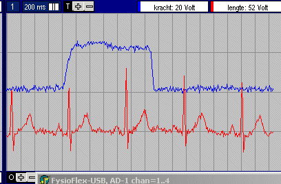 veilig TLC27 |
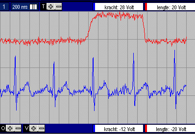 veilig LM324 |
|
ECG op kanaal 1, via LM324 Druk op kanaal 2, via TLC72, hobbel is een geblazen druk van ongeveer 20 mmHg Onveilige zijde, DC-DC converter ingeschakeld, waarom verbeterd het signaal zo sterk ???? geen aardvlak, voeding vanuit USB. Zou het verlagen van de USB spanning dit veroorzaken ??? |
Onderstaand opnamen zijn allemaal gemaakt aan de onveilige zijde.
TLC27 is de beste
LM324 is tweede keus (maar heeft lage ingangsimpedantie)
Aardvlak kan veel verbeteren
|
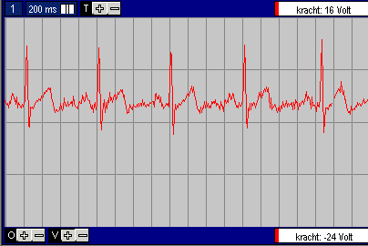 LM324, AC |
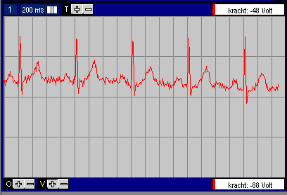 LM324, DC |
|
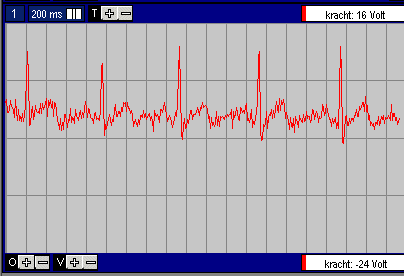 TLC27, AC |
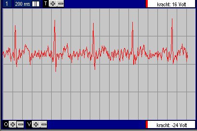 LMC6044, AC |
|
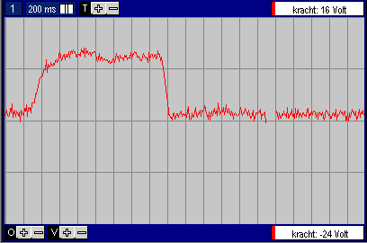 LM324, DC |
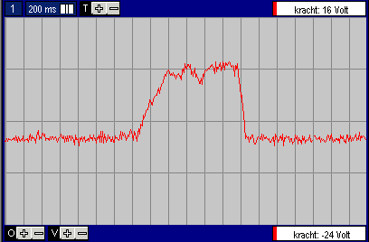 TLC27, DC, |
|
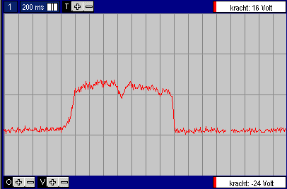 LMC6044, DC |
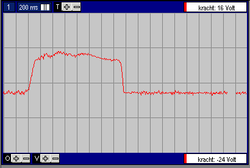 TLC27, DC, aardscherm onder gehele voorversterker+AD converter |